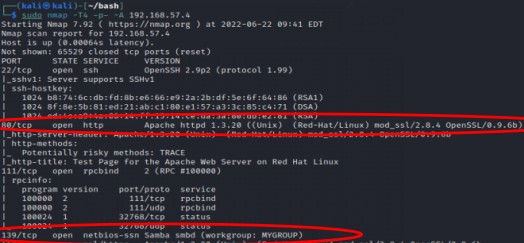
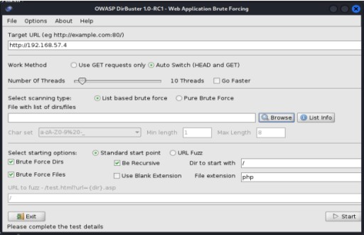
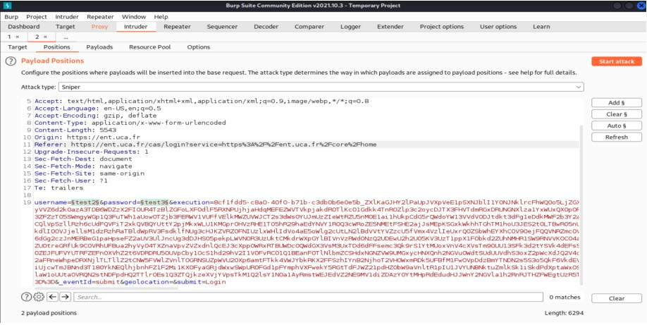

Pentesting de serveurs vulnérables
Technologies utilisées : Kali Linux, Nmap, Metasploit, Wireshark, John the Ripper
Objectif du projet : L'objectif était d'identifier, d'analyser et d'exploiter les vulnérabilités de 5 machines virtuelles (VM) cibles afin de comprendre les vecteurs d'attaque et de proposer des mesures de remédiation. Ce projet a été réalisé en environnement contrôlé.
Travail réalisé : Pour chaque machine, j'ai commencé par une phase de reconnaissance à l'aide de Nmap pour identifier les ports ouverts et les services actifs. Ensuite, j'ai effectué une recherche de vulnérabilités spécifiques aux versions des services détectés. À l'aide d'outils comme Metasploit, j'ai procédé à l'exploitation des failles trouvées (exploits, brute force sur SSH, etc.) pour obtenir un accès sur les machines. Une fois l'accès initial établi, j'ai travaillé sur l'escalade de privilèges pour obtenir les droits administrateur (Root). J'ai également utilisé Wireshark pour analyser les flux réseau et comprendre comment les données circulaient entre l'attaquant et la cible.
Résultat : Ce projet m'a permis d'acquérir une méthodologie rigoureuse de test d'intrusion. J'ai renforcé ma maîtrise de l'écosystème Kali Linux et des outils de sécurité offensive. Au-delà de l'aspect technique, j'ai appris l'importance de la documentation : chaque faille exploitée a été consignée pour comprendre comment la corriger. Cette expérience est un atout majeur pour comprendre les menaces actuelles et mieux sécuriser les infrastructures réseau sur lesquelles je travaille en entreprise.


